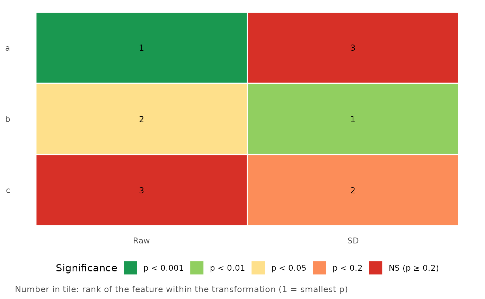

Heatmap of Features by Transformation, Coloured by Significance
Source:R/plot_feature_transform_heatmap.R
plot_feature_transform_heatmap.RdAfter screening several transformations of many features (see [transform_longitudinal_features()] and [batch_cox_single()]), shows every feature (rows) under every transformation (columns). Each tile is coloured by the significance bucket of its p-value and shows the feature's rank within that transformation.
Arguments
- results_df
A data frame with one row per feature and transformation.
- feature_col, transform_col, p_col, rank_col
Column names. Set `rank_col = NULL` to print no rank.
- p_breaks
Increasing p-value cut-offs.
- palette
Colours, one more than `p_breaks`.
- order_features
`"input"` (default; order of first appearance) or `"best_p"` (smallest p over the transformations first).
Buckets
With `p_breaks = c(0.001, 0.01, 0.05, 0.20)` the buckets are `p < 0.001`, `p < 0.01`, `p < 0.05`, `p < 0.2` and `NS` (p of 0.2 or more, or missing). A p-value goes in the first bucket whose break it is strictly below. `palette` has one colour per bucket, most significant first.
Ranks
If `rank_col` is not a column of `results_df`, the rank is computed within each transformation by ascending p-value (ties share the smaller rank; missing p-values are not ranked).
Examples
res <- expand.grid(feature = c("a", "b", "c"), transform_method = c("Raw", "SD"))
res$p.value <- c(0.0004, 0.03, 0.4, 0.2, 0.008, 0.06)
plot_feature_transform_heatmap(res)
